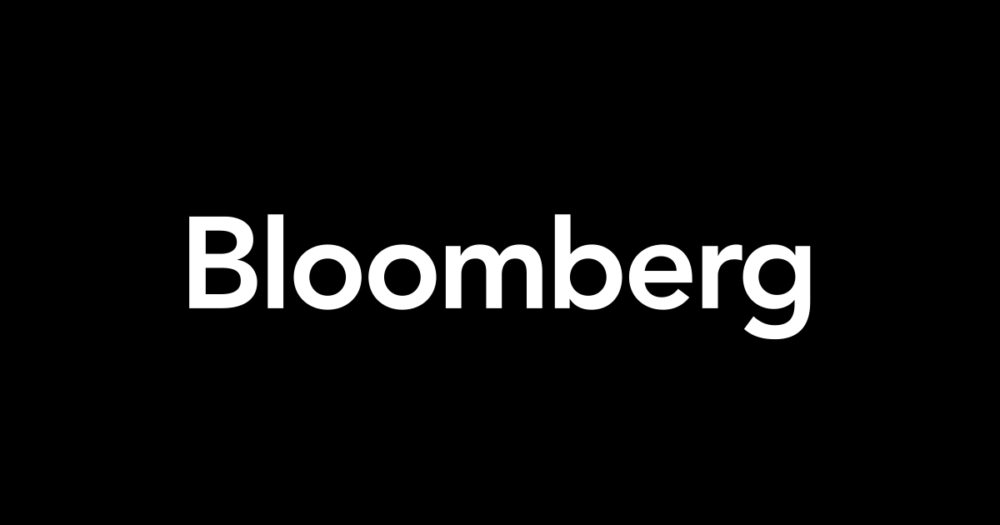

Hello! My name is Radhyyah Hossain and I am a Computer Science student from Hunter College. I mainly work
on app
development using Flutter but lately have taken an interest in using AI
in both app and web development to futher my skills. And today, I am a Co-Founder to a volunteer-run
nonprofit organization named LocalDevs! Our goal is to
create apps and websites that look to unify health and tech to promote social, economic, and health
equity in cities like NYC.
Recent Work

The Pocket Pantry
Used Flutter and Hive database to create an app to help people find food banks and soup kichens
easier. Putting all the data into one place including
filters like the borough, hours, special requirements, and even if it's mobile or kosher and
more!

Bloomberg L.P. Intern
Interned at Bloomberg L.P. and created a web application for the Bloomberg Company that aids
online group presentations by developing a notification system that alerts the
group without disturbing the flow of the presentation using HTML, CSS, JS, React JS, and the
Websocket API.

CodePath
Was a participant in the IOS CodePath program and learned the basics of iOS development and
design, used Swift to build apps such as a tip
calculator, Twitter app clone, and Instagram app clone using Twitter API.


{kind=link}